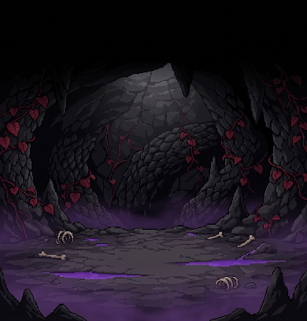
Chiến đấu theo lượt
Ngũ hành tương khắc, kỹ năng tốn linh lực, đan dược trong túi. Boss báo trước chiêu để bạn kịp chuẩn bị. Có tự đánh và tốc độ ×2.
Một thiếu niên tạp linh căn, một chiếc hồ lô phủ rêu dưới đáy khe núi, và mảnh vườn nơi thời gian trôi khác bên ngoài.
Nhập vai Lục Thanh, con trai người thợ săn ở Sơn Thôn. Trồng linh dược trong không gian hồ lô, luyện đan, đánh yêu thú theo lượt để cứu cha và bước lên con đường tu tiên.
Sắp có trên Google Play. Chương 1 miễn phí.
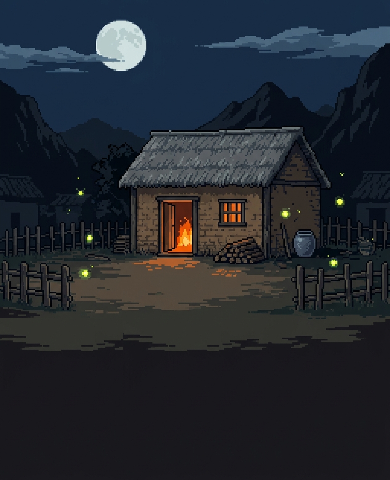
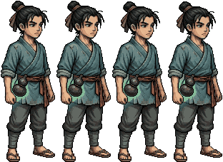
Hồ Lô Tu Tiên ghép một câu chuyện tu tiên đánh theo lượt với một mảnh vườn dược kiểu nông trại. Đánh trận cho bạn tu vi, nguyên liệu hiếm và hạt giống. Vườn cho bạn đan dược để hồi phục, giải độc và đột phá cảnh giới.

Ngũ hành tương khắc, kỹ năng tốn linh lực, đan dược trong túi. Boss báo trước chiêu để bạn kịp chuẩn bị. Có tự đánh và tốc độ ×2.
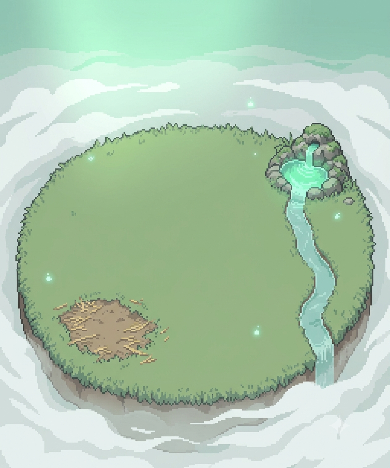
Gieo, tưới, thu hoạch linh thảo. Nuôi Linh Kê, Ngọc Thố, Linh Phong. Không tưới thì cây đứng yên, không bao giờ chết.
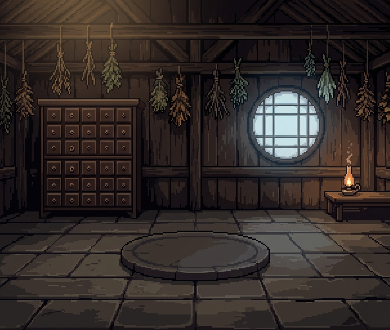
Chọn đan phương, bỏ nguyên liệu vào lò, sáng hôm sau mở lò. Đan tốt hay hỏng tuỳ phẩm chất nguyên liệu và cấp lò.
Thôn Thanh Khê nằm dưới chân núi. Người thợ săn Lục Đại Sơn bị một con rắn vảy đen cắn trong hang phía bắc. Thuốc của thầy lang chỉ giữ cho độc không lan. Con trai ông, Lục Thanh, mười sáu tuổi, ít nói và cẩn thận, không có tài gì đặc biệt. Cậu chỉ có một bí mật nhỏ.
Phần dưới kể toàn bộ chương 1, kể cả trận cuối. Muốn tự khám phá thì đọc hướng dẫn chơi.
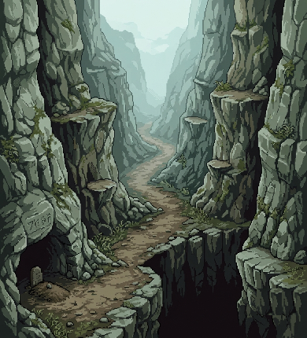
Thầy lang Vương nói trên khe núi còn Thanh Linh Thảo mọc dại, sắc uống thì đỡ đau. Lục Thanh lên núi hái. Cây cuối cùng mọc sát mép vực. Đá sụt, cậu rơi xuống đáy khe và tỉnh dậy cạnh bộ xương một tu sĩ mặc đạo bào mục nát. Bên hông bộ xương treo một chiếc hồ lô nhỏ phủ rêu. Máu từ bàn tay trầy thấm vào vết nứt, hồ lô sáng xanh.
Bên trong hồ lô là một mảnh đất nhỏ, một dòng suối mỏng và sương trắng bao quanh. Ba cây thảo dược chỉ đủ sắc một thang, nhưng cây có hạt. Lục Thanh gieo thử. Hai ngày sau đã thu hoạch được, trong khi ngoài núi phải mất cả tháng.
Chuyện này không được nói với ai. Kể cả cha.Lục Thanh, tự nghĩ
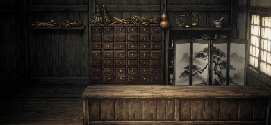
Thầy lang Vương ngạc nhiên vì thảo dược tươi quá. Ông mua lại số dư, nhưng nói thật rằng độc trên chân cha vượt sức mình. Muốn chữa tận gốc phải tìm người biết đạo. Trong thôn có một lão họ Mạc sống ở lều tranh bên suối, người ta nói lão từng là tiên sư.
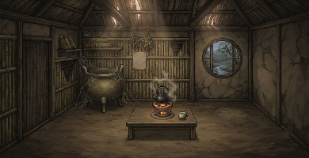
Mạc lão chụp cổ tay Lục Thanh và phán: tạp linh căn, ngũ hành đủ cả mà hệ nào cũng mỏng như giấy. Trăm người như cậu thì chín mươi chín người cả đời không qua được Luyện Khí tầng ba. Lão vẫn nhận dạy luyện đan, đổi lại mỗi bảy ngày Lục Thanh mang tới năm cây Thanh Linh Thảo.
Đan là vay. Linh khí trong đan không phải của ngươi, dùng hết là hết. Thứ tự mình tu luyện được mới là của mình.Mạc lão
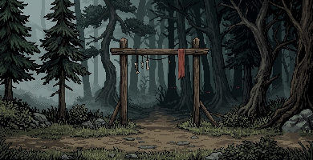
Linh khí nằm trong yêu thú ở khu rừng sau thôn. Lão Thiết, bạn săn của cha, dẫn Lục Thanh vào trận đầu: một con Sói Rừng, rồi một con Nhện Độc. Lần đầu trúng độc, cậu nhớ mãi cảm giác ấy. Khi lên Luyện Khí tầng hai, Mạc lão dạy thêm Hỏa Cầu Thuật: lửa để luyện đan, cũng để đốt kẻ khác.
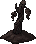
Mạc lão xem vết thương và nhận ra Hắc Lân Xà, loài rắn đã nhiễm linh khí mấy chục năm. Muốn giải độc cần mật của chính nó và Giải Độc Đan. Giải Độc Đan cần Huyết Tâm Đằng, loại cây chỉ mọc trong hang của nó. Lão đưa cho Lục Thanh một cành đằng khô đã giữ hai mươi năm. Cùng lúc ấy, suối trong hồ lô ngưng lại một giọt nước xanh. Nhỏ lên cành khô, mầm đỏ nhú ra.
Khi Mạc lão hỏi Huyết Tâm Đằng lấy ở đâu, bạn chọn nói thật hay giấu. Câu trả lời sẽ theo bạn sang các chương sau.
Ba phòng hang: rắn núi, nhện độc, rồi một phòng đầy xác thú, nơi cha bị cắn. Phía trước là Hắc Lân Xà. Vảy nó cứng như sắt, khi cuộn mình là lúc tụ độc. Hạ được nó, Lục Thanh lấy được Xà Đảm.
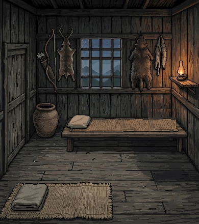
Mạc lão đứng bên chỉ lửa, Lục Thanh luyện Xà Đảm Giải Độc Tán. Qua một đêm, cha ngồi dậy được. Ra cửa, Mạc lão đưa công thức Đột Phá Đan và báo tin: mấy hôm nữa Thanh Vân Tông sẽ đến thôn tuyển người.
Thằng này. Giống mẹ con. Cứng đầu.Lục Đại Sơn
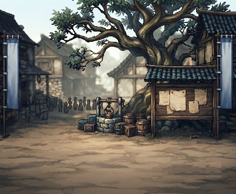
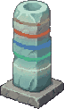
Lục Thanh đặt tay lên Trắc Linh Thạch. Đá sáng lờ mờ năm màu rồi tắt. Đệ tử Chu Lãng cười chê. Chấp sự Đường Viễn bảo Chu Lãng thử cậu. Không cần thắng, chỉ cần trụ được năm lượt.
Biết lúc nào nên trốn thì sống lâu hơn kẻ không biết.Đường Viễn
Lục Thanh được nhận làm tạp dịch ngoại môn. Tối hôm ấy cậu gieo mấy hạt Thanh Linh Thảo ở ruộng sau nhà, cha hứa sẽ tưới mỗi ngày. Bên lều tranh, Mạc lão đứng nhìn về phía nhà cậu rất lâu.
Cành đằng hai mươi năm… Thằng nhóc, ngươi giấu cái gì vậy?
Cứu cha, gặp Mạc lão, hạ Hắc Lân Xà. Luyện Khí 1 đến 3.
Lục Thanh lên Thanh Vân Tông làm tạp dịch. Đồng đội Tô Vân nhập đội.
Chuyến đi vào bí cảnh, con đường tới Trúc Cơ.
Sau khi xong chương 1 bạn vẫn ở lại thôn chơi tiếp: vườn, chuồng, ải lặp và Bảng Nhờ Vả không bị khoá.
Mười sáu tuổi. Ít nói, hay nghĩ trước khi làm. Giữ kín bí mật chiếc hồ lô.
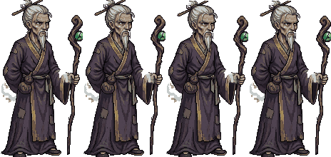
Tu sĩ sa sút sống ở lều bên suối. Khô khan, sắc sảo, và hình như đang tính toán điều gì.
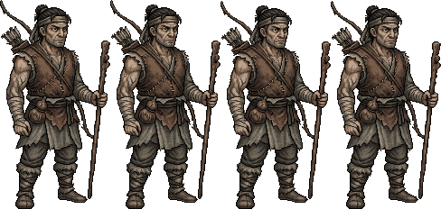
Thợ săn ba mươi năm. Cứng cỏi, ít nói giống con. Bị Hắc Lân Xà cắn.
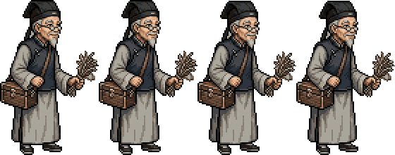
Tốt bụng, thật thà, biết giới hạn của mình. Thu mua thảo dược và đan.
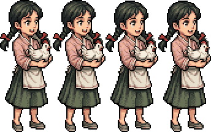
Lanh lợi, nói nhiều. Con bà Lý chủ tạp hoá. Nhờ bạn giữ hộ con gà Bông.
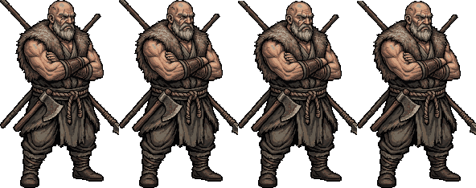
Thợ săn, bạn của cha. Thô và thẳng. Dạy bạn cách đánh yêu thú.
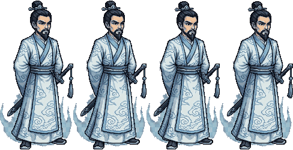
Chấp sự ngoại môn. Nghiêm, công bằng, để ý người khác rất kỹ.
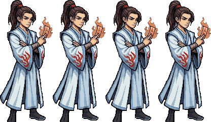
Đệ tử đi theo Đường Viễn. Kiêu ngạo, coi thường người phàm.